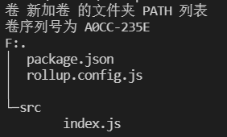

之前封装一些通用
这个简直就是必备啊！虽然现在大部分浏览器对ES6+的支持已经很好了，但是永远不能保证用户的浏览器……
下面就切入正题，先弄一个项目作为本章节的测试，目录结构如下：

// 下面是 src/index.js 文件的内容
document.addEventListener("DOMContentLoaded", () => {
// 模板字符串``相关
console.log(`模板字符串-反引号=>现在时间：${new Date()}`);
// 解构赋值相关
let { log } = console;
const PI = 3.14;
log("解构console之log方法，之后输入常量π的近似值：" + PI);
let contextInfo = {
readonly: false,
userInfo: {
name: "ddz001",
pwd: "",
tokenId: "666"
},
p1: "",
fn1() {
console.log("contextInfo.fn1");
}
};
let { readonly: isReadOnly, p1 } = contextInfo;
console.log("对象解构赋值之是否只读：" + isReadOnly);
console.log("对象解构赋值之p1：" + p1);
let [arrIndex0 = 10, arrIndex1, arrIndex2, arrIndex3 = 4] = [0, [1, 2], 3];
console.log("数值解构赋值之第一个：" + arrIndex0);
console.log("数值解构赋值之第二个：" + arrIndex1);
console.log("数值解构赋值之第三个：" + arrIndex2);
console.log("数值解构赋值之第四个：" + arrIndex3);
// 类(Class)相关
class Person {
constructor(name) {
this.name = name;
this.gender = "";
this.birthday = "";
this.idCard = "";
}
sayName() {
return this.name;
}
}
let person1 = new Person("ddz001");
console.log(person1);
// async、await 关键字相关
async function promiseFn1() {
return "async、await相关：该方法没有返回Promise，而是在方法前添加async";
}
let retPromiseFn1 = promiseFn1();
console.log("async、await相关：" + Object.prototype.toString.call(retPromiseFn1));
async function promiseFn2() {
// let isTrue = await Promise.resolve(true);
let isTrue = await true;
let retPromiseFn1 = await promiseFn1();
console.log("async、await相关：" + isTrue);
console.log("async、await相关：" + retPromiseFn1);
}
promiseFn2();
//**************************************************************************************************************/
console.log("数组实例方法includes：" + [1, 2, 3].includes("1"));
console.log("数组实例方法includes：" + [1, 2, 3].includes(3));
let arrFromStr = Array.from("利用Array.from将字符串转成数组！");
console.log(arrFromStr);
let set1 = new Set([1, 6, 6, 6, 8, 8, 8, 9]);
console.log(set1);
Promise.resolve(999).then(x => {
console.log("Promise返回值：" + x);
});
});
// 下面是 package.json 文件的内容（还没有添加依赖）
{
"name": "xxx",
"version": "1.0.0",
"main": "index.js",
"license": "MIT",
"scripts": {
"c": "rollup -c",
"cw": "rollup -cw"
}
}
各种尝试主要是针对“打包依赖”和rollup.config.js来说的。第一次尝试最简单：
# 你可以用下面的命令安装
yarn add @babel/core @rollup/plugin-babel rollup -D
// 下面是 rollup.config.js 文件的内容
import { babel } from '@rollup/plugin-babel';
export default {
input: './src/index.js',
output: {
file: 'dist/index.js',
format: 'iife'
},
plugins: [
babel()
]
};
babelHelpers: 'bundled' option was used by default. It is recommended to configure this option explicitly, read more here: https://github.com/rollup/plugins/tree/master/packages/babel#babelhelpers
说明：代码没有变化，只是外边添加一个立即执行函数
第二次尝试，依赖慢慢添加。
# 你可以用下面的命令安装
yarn add @babel/core @babel/preset-env @rollup/plugin-babel rollup -D
// 下面是 rollup.config.js 文件的内容
import { babel } from '@rollup/plugin-babel';
export default {
input: './src/index.js',
output: {
file: 'dist/index.js',
format: 'iife'
},
plugins: [
babel({
presets: ['@babel/preset-env']
})
]
};
说明：上面的配置只会转换一些语法，例如：let、const、class、数组或者对象的解构赋值等，async和await也会转换（转换之后用到了Promise）；像新增的Array.from、Set、Promise等不会转换。
第三次尝试，依赖再次添加，终于像点样子了。
# 你可以用下面的命令安装
yarn add @babel/core @babel/preset-env @rollup/plugin-babel @rollup/plugin-commonjs @rollup/plugin-node-resolve core-js rollup -D
// 下面是 rollup.config.js 文件的内容
import { babel } from '@rollup/plugin-babel';
import { nodeResolve } from '@rollup/plugin-node-resolve';
import commonjs from '@rollup/plugin-commonjs';
export default {
input: './src/index.js',
output: {
file: 'dist/index.js',
format: 'iife'
},
plugins: [
nodeResolve({
browser: true
}),
commonjs(),
babel({
babelrc: false,
exclude: /node_modules/,
// @babel/preset-env 选项设置参考 https://babeljs.io/docs/en/babel-preset-env
presets: [
["@babel/preset-env", {
useBuiltIns: "usage",
corejs: {
version: 3,
proposals: true,
},
// targets选项 参考：https://babeljs.io/docs/en/babel-preset-env#targets
// targets: {
// chrome: 96,
// },
// targets: {
// ie: 8
// },
targets: {
browsers: ["last 2 versions"]
}
}]
],
})
]
};
说明：采用上面的配置，像新增的Array.prototype.includes、Array.from、Set、Promise将会“转换”，这种方式会Array、Array.prototype或者window上补齐方法。 一般都推荐在自己的应用程序中使用，如果是通用的类库则不推荐使用这种方式
第四次尝试，和第三次差不多，都实现转换，各有利弊。
# 你可以用下面的命令安装
yarn add @babel/core @babel/plugin-transform-runtime @babel/preset-env @babel/runtime @babel/runtime-corejs3 @rollup/plugin-babel @rollup/plugin-commonjs @rollup/plugin-node-resolve rollup -D
// 下面是 rollup.config.js 文件的内容
import { babel } from '@rollup/plugin-babel';
import { nodeResolve } from '@rollup/plugin-node-resolve';
import commonjs from '@rollup/plugin-commonjs';
export default {
input: './src/index.js',
output: {
file: 'dist/index.js',
format: 'iife'
},
plugins: [
nodeResolve({
browser: true
}),
commonjs(),
babel({
babelrc: false,
exclude: /node_modules/,
babelHelpers: 'runtime',
presets: ['@babel/preset-env'],
plugins: [
['@babel/plugin-transform-runtime', {
corejs: {
version: 3,
proposals: true
},
useESModules: true
}]
]
})
]
};
说明：这种方式没有在Array、Array.prototype或者window上补齐缺少的方法而是重命名（或者叫做替换）的方式。这种方式对大环境没有影响。
综合第三次和第四次的优点， GitHub - babel/babel-polyfills: A set of Babel plugins that enable injecting different polyfills with different strategies in your compiled code. 我们期待他的到来……